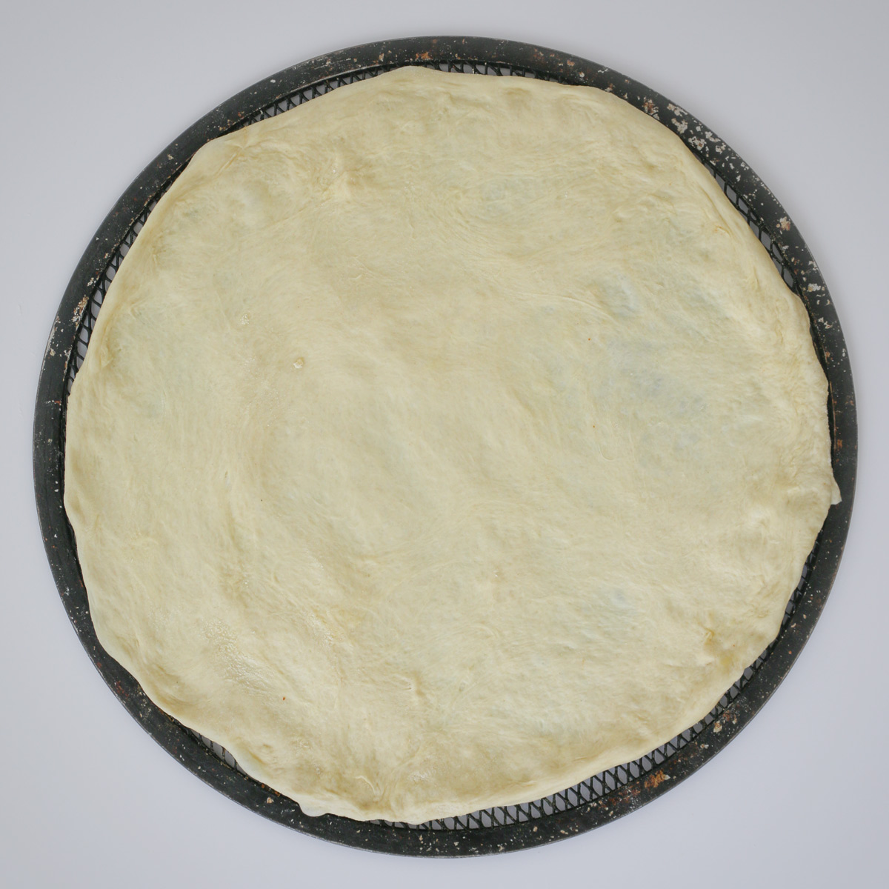
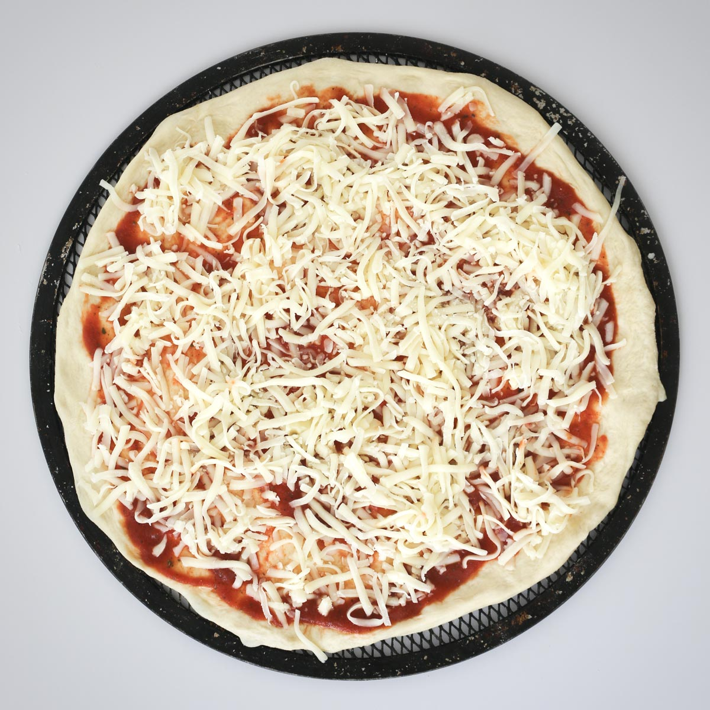
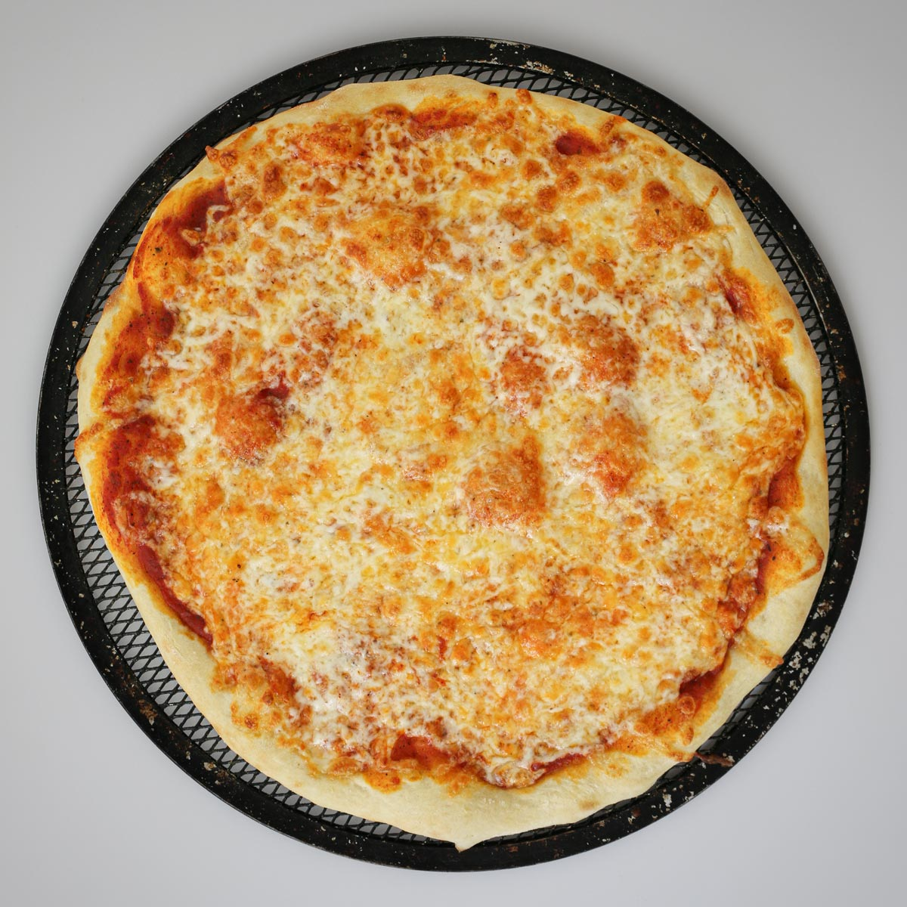

1. Prepare dough according to recipe directions. Grease baking pans. Divide dough into three or four portions and stretch to fit into pan.

2. Spread 1/2 to 2/3 cup of sauce onto each pizza round. Top with cheese.

3. Bake 10 - 12 minutes or until crust is crisp and cheese is gooey and golden.

Recipe and Photos from Good Cheap Eats Homemade Cheese Pizza Recipe